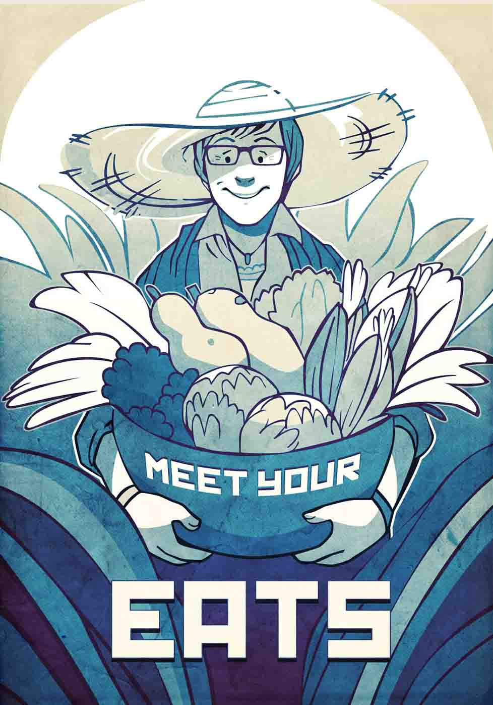

Food grown or produced locally — from lettuce to eggs to bread — are often fresher, with fewer chemicals applied for preservation or ripening, than foods produced far away or by large agrocompanies.
Make it a practice to read labels and signage not just for nutrition data and price, but for the origin and producer of your food. In your favorite grocery store, encourage the store manager to offer even more foods produced in your region. Get your neighbors to do the same.
Seek out your local farmers' market, including ones that operate in winter, and do more than shop there: talk to farmers about their growing methods and about farming issues that concern them.
Having a connection to the source of your food may induce you and your child to choose these nutritious foods again and again and even expand your exploration of regional specialties, whether vegetable, fruit, grain, fish, meat, or dairy.
Your involvement in the local and regional food chain is also good for business, insuring that small farmers, producers, and markets flourish and continue to provide the foods you value.
